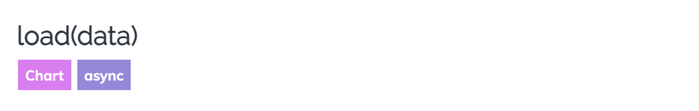

Asynchronous JavaScript
Introduction#
Functions can be either synchronous (sync, blocking) or asynchronous (async, non-blocking):
- Synchronous functions - executed one after another, the program waits for each individual statement to finish and return a result before executing the next function.
- Asynchronous functions - executed one after another, but the program doesn’t wait for the previous function to finish before executing the next.
Asynchronous programming is often used in JavaScript applications. AJAX, DOM changes and setTimeout are all examples of common async functions.
Asynchronous functions in Nexus#
Async functions in Nexus are clearly labelled in the API Reference page, for example:

Nexus uses async functions to make sure long-running functions don’t block other interactions.
For example, if your chart contains thousands of nodes, you don’t want to wait
for the layout to complete the entire computation every time you call chart.layout().
You still want to pan and zoom the chart while you’re waiting for the call to complete.
These methods return a Promise, which is an object representing the state of the asynchronous method and its eventual result,
and can be used to chain callback handlers using .then().
Promises provide a cleaner way to manage async workflows. For more details, see the MDN Page on Promises.
.then() method#
The .then() method is used to interact with completed promises.
It takes two arguments as callbacks - one for a resolved promise and another for a rejected promise.
The method can also be used to create promise chains. These are sequences of two or more async operations
where each subsequent operation starts when the previous one succeeds, using the result from the previous step.
For more details, see the MDN Page on .then().
new Promise(function(resolve, reject) {
setTimeout(() => resolve(1), 1000);
}).then(function(result) {
console.log(result); // console: 1
return result * 2;
}).then(function(result) {
console.log(result); // console: 2
});Async/await#
Async/await is a special syntax for promises which removes the need to explicitly configure promise chains, which makes asynchronous code even easier to read and debug.
The async keyword means that a function is asynchronous.
Asynchronous functions can contain one or more await keywords.
The await keyword inside an async function pauses the async function
until the asynchronous operation is complete and the promise returns a result value (resolve or reject):
async function awaitAsyncFunction() {
let promise = new Promise((resolve, reject) => {
setTimeout(() => resolve('Promise resolved'), 1000)
});
let result = await promise; // wait until the promise is resolved
console.log(result); // 'Promise resolved'
}
awaitAsyncFunction();Error handling#
When working with async functions, you can also handle errors as part of promise chains.
If you're using .then(), you can add a
.catch()
method to the chain, for example:
function rejectedPromise() {
return Promise.reject(new Error('Promise rejected'));
}
rejectedPromise().catch(function(error) {
console.log(error);
});If you're using await, you can wrap the calls in a
try/catch block:
function rejectedPromise() {
return Promise.reject(new Error('Promise rejected'));
}
try {
await rejectedPromise();
} catch(error) {
console.log(error);
}Special cases: getters and setters#
If you use certain promisified functions as getters, they’ll still return objects in a synchronous way. These functions are:
| Signature | Getter | Setter |
|---|---|---|
| chart.options() | Returns an Object containing the current chart options | Sets the options and returns a Promise |
| chart.viewOptions() | Returns an Object containing the current chart view options | Sets the view options and returns a Promise |
| chart.map().options() | Returns an Object containing the current map options | Sets the map options and returns a Promise |
| timebar.options() | Returns an Object containing the current time bar options | Sets the options and returns a Promise |
| timebar.range() | Returns an Object containing the current time range | Sets the passed range as a new range and returns a Promise |
For example:
// Getter
chart.options();
> { ... }
// Setter
chart.options({arrows: 'normal'}).then( ... );
> Promise objectES6 promise support#
If you don’t know which browser your customers use, you can include an ES6 Promise polyfill library in your page or bundle to bundle your promisified code. Popular libraries include:
If you're using the Babel ES6 Javascript compiler tool, you have to install the polyfill module for promises.
For a full list of compliant Promise A+ libraries, see Conformant Implementations.
Note: The Nexus API doesn’t support the promisifyAll() implementation.
Asynchronous image loading#
The following functions return promises which are fulfilled either after all of the images have loaded, or immediately if all of the images are already loaded.
In many cases you won't need to wait for the promises to be fulfilled - they are mostly useful when you want to delay an action until after images have loaded. This example shows how you can load data and run a layout immediately, but keep the chart locked until all the images have loaded:
chart.lock(true, { wait: true });
chart.load(data).then(function () {
chart.lock(false);
});
chart.layout("organic");Using Nexus with callbacks#
In 7.0, Nexus was promisified by default and using callbacks was deprecated.
Although you will still be able to use callbacks for the full lifecycle of Nexus 7.x, we recommend migrating to promises as soon as possible.
If you cannot update your code to use promises yet, you can use the GraphNexus.callbacks()
wrapper to recreate the callback behaviour.
To use GraphNexus.callbacks(), add the function at the start of your code to create a Nexus object:
Browser#
// legacy script tag installing Nexus as a UMD bundle by referring to nexusgraph.js
// no change required
<script src='graph-nexus/umd' type='text/javascript' />GraphNexus = GraphNexus.callbacks();Node and Modern JS#
// creates a component with enabled callbacks
GraphNexus.callbacks().create(args, callbackFn);Error handling for asynchronous functions with callbacks#
If you want to add special error handling when using callbacks, you should listen for unhandled exceptions:
// browser
window.addEventListener('error', function(err) {
// do something with the error
// the error may still be shown in the console depending on the browser
});// Node and Modern JS
process.on('uncaughtException', (err)=> {
// do something with the error
});See also Breaking changes for 7.0 for more details.